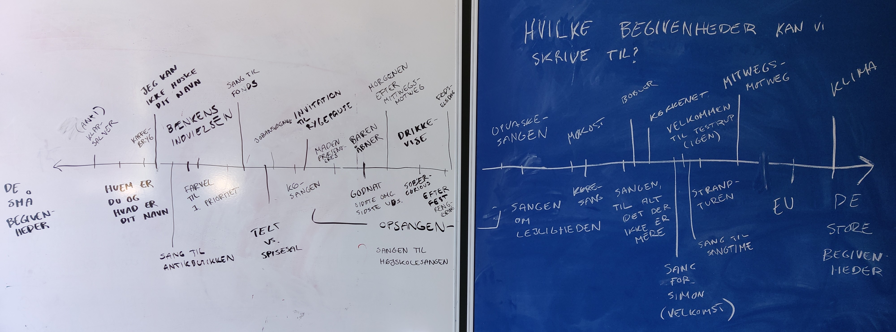
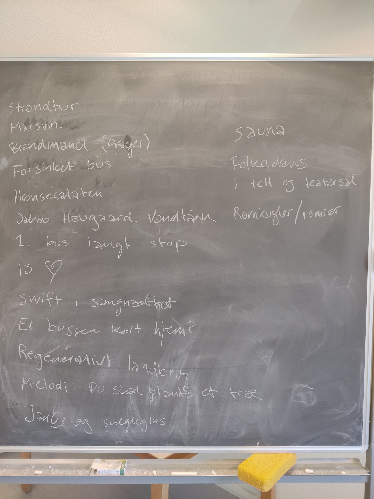
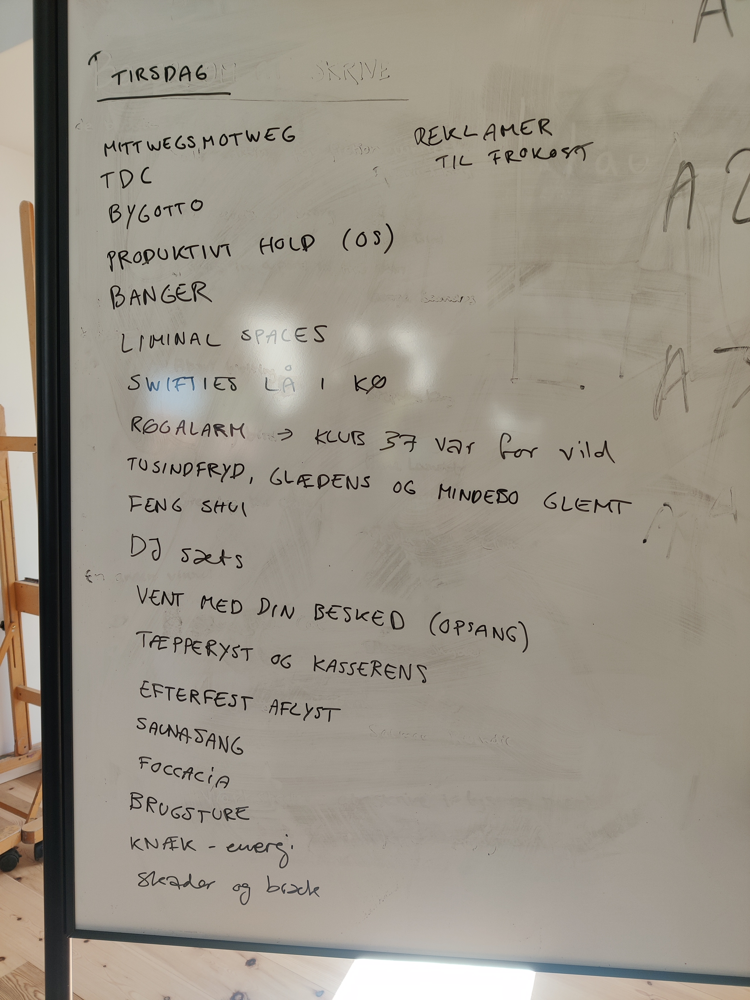
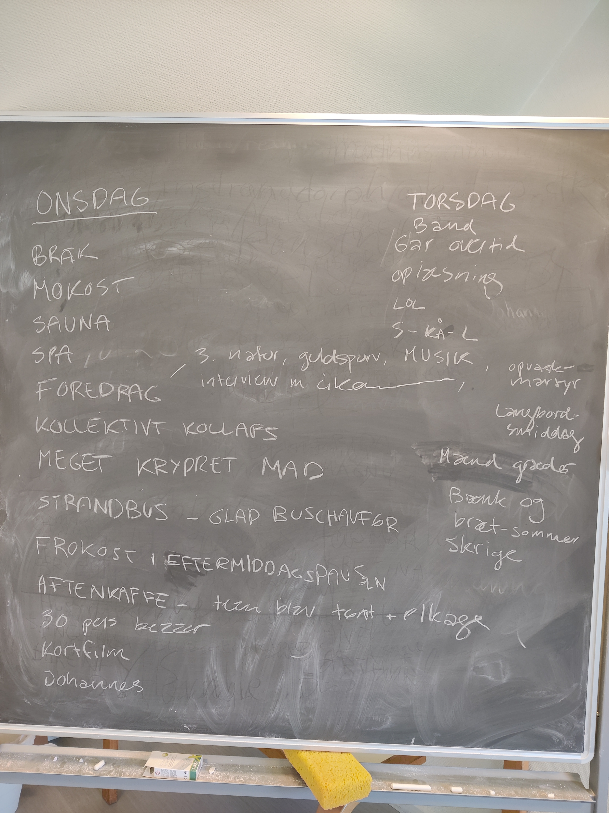

Den traditionsrige lejlighedssang er i KRISE! Men dette dyrebare stykke kulturarv kan stadig reddes, så lad os sammen gentænke, genoplive og bringe genren ind i 2024!
Denne side kommer med kreativ inspiration til den gode lejlighedssang's fire søjler, så du aldrig igen behøver at købe en generisk sang.
Begivenheden
Hvad er den gode begivenhed?
Melodien
Hvad er den gode sang?
Teksten
Hvad er den gode tekst?
Præsentationen
Hvad er den gode præsentation?
Værker
Lejlighedssange produceret på AUGUKU 2024
Gå tilbage
Den Gode Begivenhed
De helt klassiske er runde fødselsdage, bryllupper og konfirmationer - og lad os endelig holde fast i disse så ingen bli'r skuffede!!
YouTube klassikeren "Det er Anna & Erhardt" hylder to runde fødselarer:
Den Alternative Begivenhed
Men der skrives jo sange til mange begivenheder! Er politiske protestsange også lejlighedssange?
Vi brainstormede os frem til disse begivenheder på Auguku:

Den Gode Melodi
Bertel Haarder er kendt for sit talent til at skrive lejlighedssange og bringer i DR 7 knaldgode tips, og fraråder både for basale og for komplekse melodier. Man kan nærmest gabe ved synet af "Melodi: I en kælder sort som kul" under titlen på en udleveret lejlighedssang. Men genkendeligheden er vigtig! Festsangetaler.dk's top 25 liste over de bedste melodier til festsange clasher muligvis med Haarder's råd dog...
Mangler man det musikalske talent til at bakke rytmer og melodier op til en fællessang, kan man få hjælp til klassikerne på festsange.nu
Virkemidler
Både sangvalg og musikkens virkemidler kan bruges kreativt til den gode lejlighedssang.
Man kan jo også overveje at kombinere flere sange i en festlig medley, eller simpelthen at sammenblande dem i et grineren mashup.
Nu gennemgår vi lige nogle eksempler på valg indenfor:
Genre
Rytme
Klang
Harmonik
Genre
Klassisk musik er et EPISK valg, men kan selvfølgelig være en ugenkendelig og måske svær genre at få et crowd med på. Check denne protestsang over den franske nationalmelodi:
Protestsang
Melodi: Marseillaisen
Tekst: Paul Tempels & Niels-Simon Larsen
Vi er de grønne aktivister,
vi vil kæmpe for vor jord!
Ingen skal holde os tilbage.
:/: Ser I bannernes klare besked? :/:
I kan høre vores taler & sange.
Vi bevæger os målrettet frem.
Snart høres vi i alles hjem.
Hverken magt- eller pengemænd vi sparer.
:/: Vågn op! Kom og vær med!
Slut sammen og hold stand!
Træd frem, vær med!
Hjerternes råb skal lyde hvert et sted! :/:
En pop-banger kan næsten aldrig slå fejl - men pas på med at vælge en sang udelukkende på baggrund af et genkendeligt omkvæd!! Der kan ligge et lumsk vers lige om hjørnet...
Vi er helt vilde med denne lejlighedssang til en gom over YMCA:
I JYlland,
der taler man uden ord.
Ja i JYlland,
gør det slet ikke spor,
at man IKke,
siger fø-le-lser højt,
Nej det ÆH - så - rin-ge end-da
I gymNAsiet,
der hvor du gik med hat,
i gymNAsiet,
hvor du drak hver en slat,
I gymNAsiet,
der var gommen banal,
og for-VIR-ring-en var to-tal
Forvirring lyder som: (gommen laver larm)
Forvirring lyder som: (gommen laver larm)
Du spilled' musik,
Du drak øl og var skør,
Du var glad og had' højt humør!
Og glæde lyder som: (gommen laver larm)
Og glæde lyder som: (gommen laver larm)
Ja musiksnobberi,
og et kernesundt brød,
der var intet, som du fortrød
Men hvad med techno, jazz, mf...? Der ligger et uforløst potentiale her!
Vi brainstormede os frem til 5 overordnede kategorier som man kan tænke over når man skal vælge sin sang:
Rytme kan selvfølgelig også bruges kreativt. Lejlighedssangen over YMCA ovenfor har lidt en implicit rytmisk joke fordi trykfordelingen i ordet "Jylland" ikke helt passer til den hårde markering på den første stavelse i YMCA's originale tekst "Young man". Fun!
Man kan jo også bare vælge at synge i dobbelttempo som i "De Frivillige":
En lidt mere avanceret rytmisk idé er at ændre taktarten. Et eksempel kunne være at klippe en ottendedel af en sang, originalt i 4/4, så den går i 7/8. Det vil give en hakkende, aggressiv fremdrift.
Klang
Med klang snakker vi hverken om rytme eller melodi, men om hvordan tonerne lyder. En guitar har en anden klang end et klaver, som har en anden klang end en vokal osv.
Et godt eksempel er Taylor Swift's "Love Story", der blev lavet som en sukkersød folk-pop sang. I hendes 1989 World Tour fik den et klang-mæssigt makeover og blev til en episk stadion synthpop-banger ved (bland andet..) at skifte klangene af banjo, guitar og violin ud med klangen af flere synthesizers:
Harmonik
Harmonikken er alle de toner der sker rundt om melodien. For pebrede ændringer i harmonikken sætter nok folk af, hvis det er meningen at de skal kunne synge med, men det kan stadig være fedt eller måske endda bruges komiskt. En simpel idé er at ændre en dur sang til mol eller omvendt (..hvor melodien i så fald også nok skal ændres, medmindre det skal være vanvittigt spicy!).
Jacob Collier forklarer det rimelig godt her, med en re-harmonisering af "Hey Jude":
..alt fra Berklee College of Music er i øvrigt for sindssygt i den her kontekst. Se f.eks. den her medley af Dirty Loops:
Vi brainstormede over hvad der skete lørdag og søndag:
Den Gode Tekst
Bertel Haarder har syv tips til at skrive en klassisk lejlighedssang. festlinjen.dk kan muligvis også være din traditionelle ven.
Er man ikke den store skribent er det heller ikke unormalt at bestille festsange - nogle helt generiske kan findes hos festsange.nu
Vi tænker at man kan tænke over følgende ting, når teksten skal skrives:
Strukturen af sangen
Humoristisk vs. Højtideligt
Internt vs. Generelt
Rim eller ej
Passende versefødder eller ej
AI som hjælpemiddel
Forventninger
Dialekt / Sociolægt
Protestsangen over Marseillaisen fra "Melodi"-sektionen er selvfølgelig et højtideligt eksempel. I dag synger vi den diametrale humoristiske modsætning fra et kollegie's sanghæfte, hvor teksten bliver gradvist mere vrøvlende igennem hvert vers:
Vrøvlevisen
Melodi: Herlig en sommernat
Tekst: Ukendt. Fra kollegiet Studentergaarden's Visehæfte
(Første vers)
Herlig en fest i dag,
veksle i vennelag,
tanker i alvor og gammen.
Talen til mindebånd,
slynger med vid og ånd,
knytter os broderligt sammen.
Se, druen funkler i mit glas,
stemmer mig veltilpas.
Og husk, nu skal vi lave spas:
Tøm med mig dit fyldte glas!
(Sidste vers)
Hov, hvannu deffo naad'
de'e da en misforstaad'
hva' ska' de' te' a' borret drejer?
Øh, la' nu vær' me' -hik!-
Na - ka' de nær' de', strik,
de'e dasse naade a' du plajer??
Dadu dadi da dudidas -
tuttenas - tuttelas,
aa, rigti' væmli' uttepas
- tsømmermæn' i syldeklas!
Denne sang er et godt eksempel på bevidst at omgås versefødderne. Den sjofle Ud'n for slottets porte leger vældigt med rim og forventninger.
Vi brainstormede os frem til at en hurtig melodi kan sætte mere fokus på melodien, hvor en langsom melodi kan sætte fokus på teksten. Vi snakkede også om at man kun skal bryde med regler, hvis man gør det "godt".
Brainstorm til Opsamlingssang
Vi brainstormede over hvad der skete på Testrup mandag:

Den Gode Præsentation
Mange klassiske sangskjulere nævnes på festlinjen.dk, der bl.a. tipper at "[f]lag er ofte det man anvender som symbol" til en fødselsdag.
Sangskjuler
Live musik
Stille sig op og synge for
Sketch
Interaktivt
Sang Layout
Brainstorm til Opsamlingssang
Vi brainstormede over hvad der skete tirsdag, onsdag og torsdag:




{kind=link}
{kind=link}
{kind=link}
{kind=link}
{kind=link}